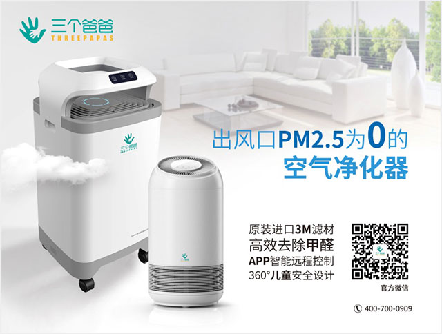

甲醛（分子式：CH2O）亦称蚁醛，是最简单的醛类，通常情况下是一种可燃、无色及有刺激性的气体。
甲醛是最常见的室内空气污染毒物，约有三千多种不同建筑物的产品均含有甲醛，主要来源为纤维板、三夹板、隔音板、保丽龙等装潢材料。目前甲醛已被世界卫生组织确定为致癌和致畸型物质，室内浓度达0.5 mg/m3会使人体产生流泪及眼睛异常敏感的症状。长期接触低剂量甲醛可引起慢性呼吸道疾病，引起鼻咽癌、结肠癌、脑瘤、细胞核基因突变等。
甲醛对皮肤及黏膜有刺激性作用，比如咽喉和眼睛鼻腔等，造成这些位置水肿，发炎、溃烂，甚至最后导致鼻咽癌等严重病变。接触过甲醛的皮肤可能出现过敏现象，严重者甚至会导致肝炎、肺炎及肾脏损害。
点击二维码关注三个爸爸公众号